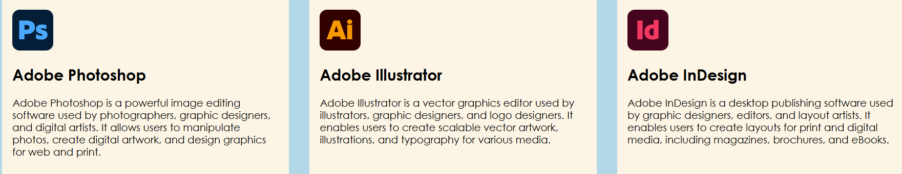

Weekend Getaways from Chicago
Developed a responsive travel website highlighting three weekend destinations within driving distance of Chicago: Galena, Illinois; Madison, Wisconsin; and Grand Rapids, Michigan.
The project focused on using HTML and CSS to organize content, create a navigation menu, and build destination cards. I applied Flexbox and CSS Grid to develop structured layouts while strengthening my understanding of web design, visual hierarchy, and responsive page organization.
Adobe Creative Cloud Applications

Created an informational webpage comparing three Adobe Creative Cloud applications: Photoshop, Illustrator, and InDesign. The project explained the primary purpose of each program, highlighting Photoshop for image editing, Illustrator for vector graphics, and InDesign for page layout and publication design.
This assignment helped strengthen my HTML skills while organizing technical information into a clear, accessible webpage.